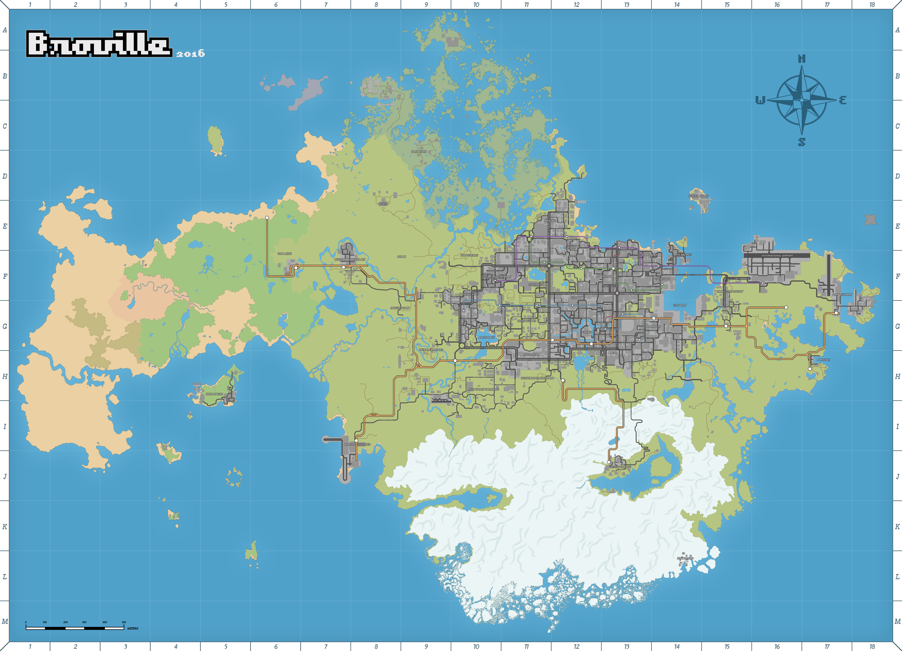
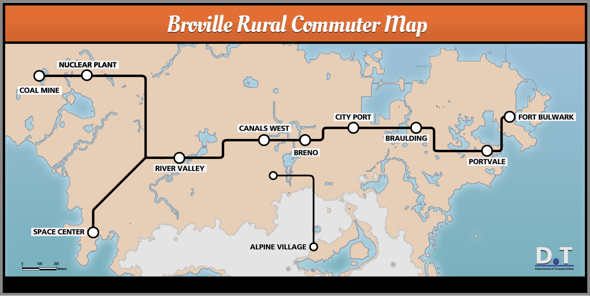
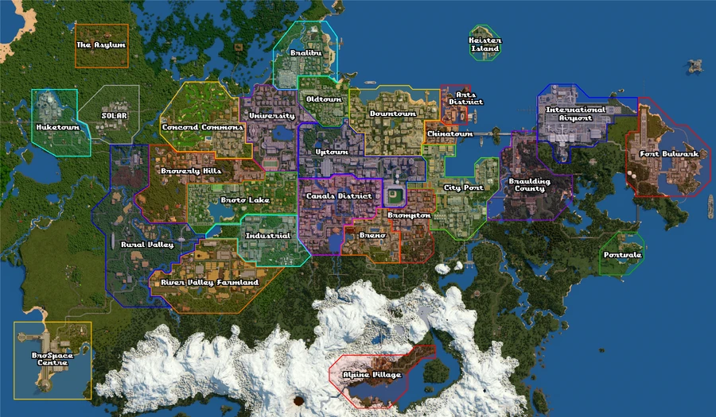
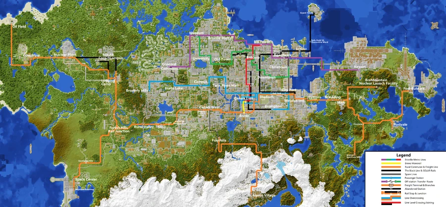
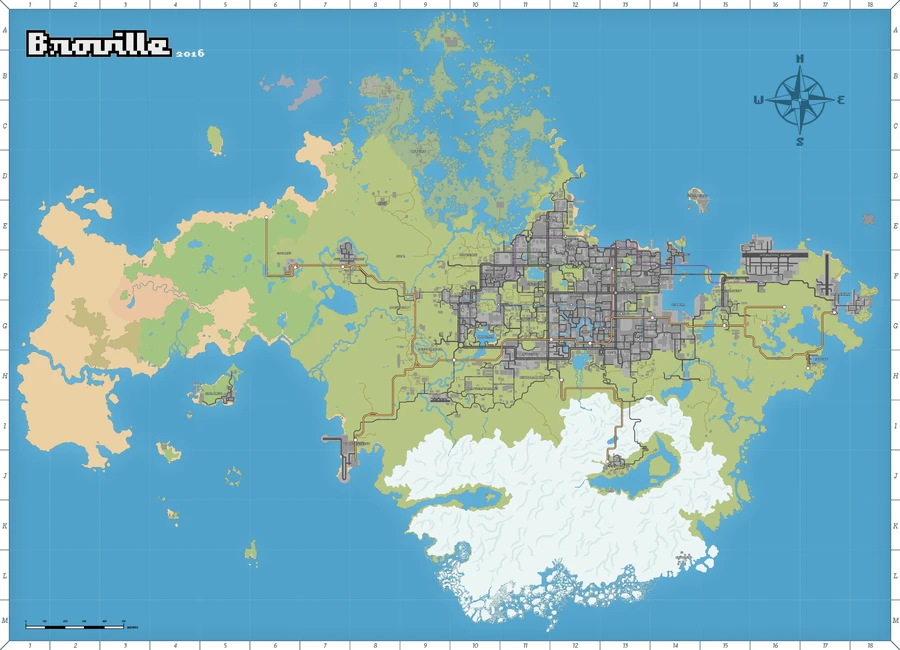
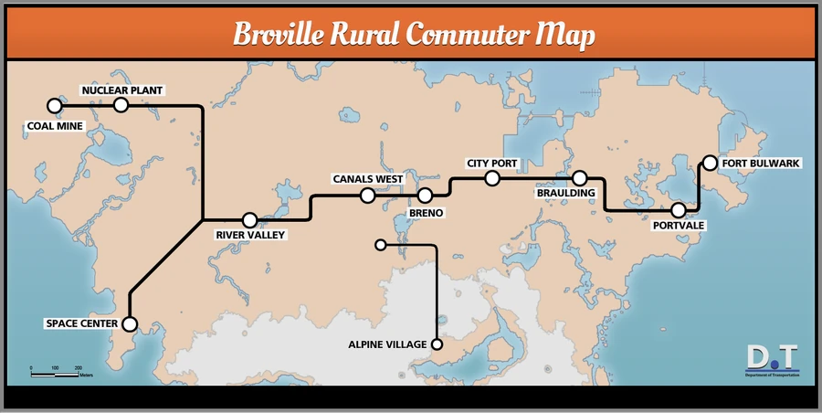

Broville Atlas
Find your way through the city, its districts and the continent beyond.
Open the public coordinates spreadsheet
Roads


Wheel to zoom · drag to move · numbered markers separate as you zoom in. Positions on Roads and Districts are approximate. The coordinates in each place’s details are the recorded navigation reference.
Districts

Wheel to zoom · drag to move · numbered markers separate as you zoom in. Positions on Roads and Districts are approximate. The coordinates in each place’s details are the recorded navigation reference.
Metro

Wheel to zoom · drag to move · numbered markers separate as you zoom in. Positions on Roads and Districts are approximate. The coordinates in each place’s details are the recorded navigation reference.
Regional railway


Wheel to zoom · drag to move · numbered markers separate as you zoom in. Positions on Roads and Districts are approximate. The coordinates in each place’s details are the recorded navigation reference.
Isometric view

Wheel to zoom · drag to move · numbered markers separate as you zoom in. Positions on Roads and Districts are approximate. The coordinates in each place’s details are the recorded navigation reference.
World coordinates
North is up (−Z); east is right (+X). Grid: 500 blocks. This chart plots recorded locations; it does not show terrain. Underground sites may share a surface position.
Places & regions
322 places
Abandoned Manor Landmarks
An abandoned property in western Broville’s swamp lowlands, also called SOLAR Manor. The identity of its former resident is unknown.
Read articleAlkali Clan Ruins Landmarks
Remains of an ancient jungle clan studied by explorer Digby Braveman. Near the coast, a stairway leads to a cave containing human remains and possible hidden passages.
Recorded location: -2649, 47, 2168
Alpine Village Regions & districts
A lakeside settlement in the snowy southern mountains. Broville’s tourist guide presents it as a ski resort, with chocolate and downhill slopes among its attractions.
Recorded location: -236, 101, 2831
Arts District Regions & districts
A small waterfront district east of Downtown and north of Chinatown. Its name also appears in Black Line documentation.
Read articleAsylum Landmarks
An abandoned property northwest of Concord Commons. Dormitories, a water tower, a crematorium, and the main building surround access points to underground levels.
Recorded location: -1320, 68, 1470
Black Line Transport
An old underground railway network identifiable through Mid Side signs and entrances in the canals area. Some stations were abandoned, while others received new uses.
Recorded location: -328, 66, 1802
BN Tower Landmarks
A tower beside Boardwalk beach, described as Broville’s tallest building and a visible landmark for arrivals by sea or air.
Recorded location: -138, 152, 1727
Boardwalk Station Transport
A waterfront station. Community documentation lists it among the stops reused from the former Black Line.
Recorded location: -25, 65, 1830
Bralibu Regions & districts
A coastal strip north of Oldtown, identified on the district map. Its outline follows the headland facing the sea.
Recorded location: -466, 64, 1524
Braulding Campsites Landmarks
Ranger Rich’s station and the campers’ diaries introduce the investigation into disappearances in Braulding County.
Recorded location: 450, 66, 2092
Braulding County Regions & districts
A region east of City Port, beside the airport. Its campsites hold accounts by Ranger Rich and Abby.
Recorded location: 327, 69, 2038
Breno Regions & districts
A district south of the center, between the canals and Brompton, associated with hotels, casinos and nightlife. It is served by a local monorail and has a station on the regional railway diagram.
Recorded location: -274, 68, 2258
Breno Monorail Transport
A local Yellow Line linking Breno’s hotels, casinos and nightlife venues to the Canal East interchange with the Red and Blue Lines.
Read articleBrocorp Metro Station Transport
A Downtown station near the BroCORP tower, beneath the Bank of Broville. It connects the Green and Red metro lines and has three street entrances.
Recorded location: -249, 46, 1806
Brolapagos Regions & districts
An island southwest of the urban core, with a port settlement, a resort and an old monastery connected to its colonization history.
Recorded location: -2155, 70, 2496
Brolapagos Monastery Landmarks
An old religious mission on Brolapagos Island associated with its founder, Bembe Coto. Its funerary area preserves a testament and a key that begin an investigation into the site’s past.
Recorded location: -2157, 72, 2372
Brompton Regions & districts
A neighborhood east of the canals, near the port. Its history connects expansion with port trade and urban decline with the emergence of the Browery.
Recorded location: -77, 72, 2099
BroSpace Centre Regions & districts
A BroCORP-affiliated space center on the southwest coast, officially called Bro S Space Center for launch and research and served by Space Center station.
Recorded location: -1575, 67, 2801
BroStreet Station Transport
A subway station in Downtown on Bro Street, beside the Bro Street Diner and the BroCORP Tower. It was one of the first stations in v11.
Read articleBroto Lake Regions & districts
A residential district arranged around a lake, west of the canals and north of the industrial area.
Read articleBroverly Hills Regions & districts
A residential area south of Concord Commons, between Rural Valley and Broto Lake.
Recorded location: -972, 64, 2027
Broville Bluff Station Transport
A name used in transport references for a modernized station in Broville Heights, within Old Town. The v11.1 history records signs being corrected from Broville Bluffs to Old Town Station.
Recorded location: -472, 65, 1694
Broville City Hall Landmarks
A civic building in Downtown, built above The Palisade business center. It houses municipal administration, reception facilities and an assembly.
Read articleBroville Embassy Center Landmarks
A diplomatic representation center included in Broville’s building inventory.
Recorded location: -508, 75, 2105
Broville General Hospital Landmarks
The city’s general hospital, distinct from the abandoned property known as The Asylum.
Recorded location: -346, 85, 1887
Broville Heights Regions & districts
A predominantly residential suburban area just outside the city of Broville.
Read articleBroville Heights Station Transport
A rail transit stop serving the Broville Heights area.
Read articleBroville International Airport Regions & districts
The region’s main airport complex, on the peninsula northeast of the urban area. It is an arrival point from Fractal Island and a Purple Line metro terminus.
Recorded location: 462, 72, 1892
Broville Memorial Pantheon Landmarks
A civic memorial recorded in the city’s landmark inventory.
Read articleBroville Observatory Landmarks
A large telescope in the mountains south of the Downtown docks, reached from the science center and accompanied by an exhibition of objects found nearby.
Recorded location: -144, 89, 2429
Broville Police Headquarters Landmarks
The police headquarters recorded among the city’s public buildings.
Read articleBroville Stock Exchange Landmarks
Broville Stock Exchange, also called the SExchange, is a financial market above a bank and connected to the neighboring investment building.
Recorded location: -209, 88, 1905
Broville Subway Transport
The subway network crosses downtown, the canals, the university, and the airport. Museum, Brocorp, BN Tower, and Canals East are interchange points on the v11 diagram.
Read articleBroville University Landmarks
Broville’s main university in v11, known as BroU. Its extensive campus, serving more than 3,000 students, helps locate the academic area and its stations.
Read articleBroville’s Sea and Islands Regions & districts
An index of island destinations, ports, and the mainland’s seafaring stories.
Read articleBrowery Landmarks
A cluster of narrow homes in Brompton. Community history links its origins to land left by an interrupted housing project.
Read articleBVS Double Rainbow Landmarks
A merchant ship remembered in community documentation for its sails and its role as a harbor tourist attraction.
Read articleBVS Mexicoke Landmarks
A small abandoned vessel in Broville Bay, associated with an old smuggling operation and a satirical census about maritime safety.
Read articleBVS Supremecy Landmarks
A v10 battleship whose name is spelled Supremecy. The story associated with the community continuation distinguishes it from an earlier BVS Supremacy.
Read articleCanals District Regions & districts
A canal district south of Uptown and west of Brompton. The former station converted into a bookshop preserves the connection to Brosco’s laboratory.
Read articleCanals East Transport
A station at the meeting of the red and blue lines. The diagram also connects it with the Breno monorail.
Read articleCanals West Transport
A regional railway stop between River Valley and Breno, distinct from the Canals East subway station.
Read articleCanopy Laboratories Landmarks
Facilities identified through records of samples, medications and biological tests.
Read articleCasinos Landmarks
Commercial entertainment venues whose gaming halls, shows, and hotels form part of city life beyond the major research storylines.
Read articleCattail Town Regions & districts
A settlement marked north of the sanatorium, around the swamps.
Read articleCemetery and Crypts Landmarks
Graves, a cabin, and underground passages hold traces of the search for three keys.
Recorded location: -715, 63, 1314
Chinatown Regions & districts
An area between Downtown, Arts District and City Port. Its name appears on the city map and the metro network.
Recorded location: -48, 66, 1856
City Port Regions & districts
A port on the city’s eastern edge. It is the urban landmark before Braulding on the regional railway.
Read articleCoal Mine Landmarks
A western point on the railway network near the power plant, identified as Coal Mine on the road map.
Recorded location: -1900, 76, 1829
Concord Commons Regions & districts
A district on the city’s western edge and the purple line terminus. It is a landmark for heading toward the forest around the asylum.
Read articleCWC Stadium Landmarks
A stadium in the area between the canals, Brompton, and City Port, recognizable by its footprint on the district map.
Read articleDowntown Regions & districts
A core of commercial towers east of Oldtown. Above the ruins stand the BroCORP tower and the station serving the central district.
Recorded location: -127, 65, 1827
Edward Page’s bookshop Landmarks
A bookshop established by Edward Page in a former station in the canals district. Coffee and a railway diorama feature in the bookseller’s account of daily business, while his diary also records noises beneath the floor and a hollow wall behind a bookshelf.
Recorded location: -507, 70, 2228
Egyptian Civilization of the Desert Regions & districts
In the western part of the continent, a small sandy settlement stands beside a monumental complex with a temple, pyramids and burial galleries.
Recorded location: -3115, 84, 2348
FeelsGoodMan Clinic Landmarks
A Feels Good Man Pharmaceuticals clinic on the edge of prosperous Broverly Hills, serving clients who can pay for priority care.
Read articleFort Bulwark Regions & districts
A fortification in the far east, beyond the airport. The regional map includes it on the eastern transport corridor.
Read articleFractal Island Regions & districts
The arrival island and starting point for v11, with a choice of game mode and access to different parts of the continent and to Brolapagos.
Read articleGameBros Arcade Landmarks
A Broville arcade owned and operated by BroCORP's electronic entertainment division.
Recorded location: -197, 69, 1983
Golf course Landmarks
The Golf Course occupies the open area between Concord Commons and the SOLAR forest, in the western sector of the road map.
Read articleGreat Plains Regions & districts
An area of open terrain mentioned in descriptions of the Museum of Natural History’s excavations.
Read articleHeraldus's Expedition Quest starting points
Start at the ruined castle and follow the journals of an underground search for the Eye of Arburaz.
Recorded location: -1367, 64, 1111
HoBro’s Escape Quest starting points
An underground fraternity leaves an evacuation order after losses among its members.
Recorded location: -490, 52, 1891
Industrial district Regions & districts
An area of industrial facilities between Broto Lake, the canals, and River Valley Farmland.
Read articleKeister Island Regions & districts
A small island off Broville’s northern coast, marked separately on the district map.
Read articleLieldrindre, Goddess of Fire Quest starting points
A voice threatens anyone who disturbs the altar south of the military base.
Recorded location: 895, 70, 2145
Logging Camp Landmarks
A logging camp west of Broverly Hills, placed by the road map beside the valley’s roads and railway.
Recorded location: -1120, 68, 2314
Melonport Landmarks
A port-related landmark documented by the community, offering an entry point into the history of Broville’s shipments.
Read articleMid Side Station Transport
A stop recognizable from Black Line signs, with traces on two levels near downtown.
Recorded location: -328, 66, 1802
Museum of Natural History Landmarks
The Broville Museum of Natural History brings together paleontology, archaeology, geology, art, and local history in a complex in southern Brolibu. The time-machine mission also begins on its lower levels.
Recorded location: -594, 65, 1649
Nuclear Plant Landmarks
A power plant in the western sector, beside the Coal Mine and River Valley corridor. A workers’ settlement developed alongside its facilities.
Recorded location: -1579, 69, 1825
Nuketown Regions & districts
An area west of the SOLAR complex, marked separately on the district map.
Read articleOldtown Regions & districts
A district between University, Uptown, Bralibu, and Downtown, identified on the v11 district map.
Read articlePortvale Regions & districts
A coastal settlement southeast of Fort Bulwark, served by the regional railway corridor.
Recorded location: 839, 73, 2331
Project Chr0NOS Quest starting points
A SOLAR project leading to fragments of other eras. Its capsule stands in the lower levels of the Museum of Natural History.
Recorded location: -594, 65, 1649
Regional Railway Transport
A corridor linking the mine and power plant to River Valley, the canals, the port, and eastern destinations.
Read articleRiver Valley Farmland Regions & districts
Farmland southwest of the city. Its fields and roads mark the transition between the industrial district and the southern terrain; a tourist guide highlights the contrast between old equipment and large power installations.
Read articleRuined Castle Landmarks
A medieval fortress in the swamps northwest of Broville. Three enclosures, a village and a port form the complex associated with Heraldus and the legends of the Black Mother.
Recorded location: -1367, 64, 1111
Ruins of the Buried City Landmarks
Beneath Downtown, ruins and emergency notices preserve traces of H.I.V.E. and the reactor collapse, associated with the story of old Broville sinking.
Recorded location: -249, 46, 1806
Rural Farmland Regions & districts
An area of fields identified west of Broto Lake, near where the railway corridor passes through the valley. River Valley Farmland appears farther south on the same plan.
Read articleRural Valley Regions & districts
A sparsely settled area west of the urban grid, on the way to the farming valley and the space center.
Read articleShady Slopes Regions & districts
A sparsely settled area south of the university district and east of Broto Lake. Its name appears on the road map near Wesley Street.
Read articleSOLAR Facilities and Installations Landmarks
The western complex, urban addresses, and coastal and underwater stations make up the group of facilities attributed to SOLAR.
Read articleSOLAR Western Complex Landmarks
A derelict facility in the forest west of Broville, beside Nuketown and south of the asylum, with research and reactor sectors.
Recorded location: -1307, 69, 1782
Southern Mountains Regions & districts
A snowy mountain range with villages, cabins, and underground sites. Some books preserve cycles, rites, and accounts of proximity to the Void.
Read articleSquatters Court Landmarks
A west-coast refuge recommended by Hobo Ed to members of HoBro, a brotherhood occupying urban hiding places. The evacuation notice presents it as an escape destination but leaves its continued safety uncertain.
Read articleSunnybro Trailer Park Regions & districts
A trailer park on the city’s southern edge, between the industrial district and the ascent into the mountains.
Read articleSwamplands Regions & districts
A network of shallow water, channels and wooded islands at the city’s northern edge. The ruined castle and Cattail Town guide exploration through a large, sparsely occupied region.
Read articleSwoodlund Regions & districts
A settlement on the snowy southeastern coast, identified on the road map. The community catalog uses the coast between Portvale and Swoodlund as a reference for a SOLAR station.
Read articleThe asylum expedition Quest starting points
In April 2013, a paranormal team arrived at the property to record a show. Its diaries allow visitors to retrace its passage through the buildings.
Recorded location: -1320, 68, 1470
The Braulding Disappearances Quest starting points
A ranger’s reports describe a missing camper and witnesses who saw her following a light.
Recorded location: 450, 66, 2092
The Cemetery’s Three Keys Quest starting points
Darius’s camp is the starting point for a search for three keys among graves and crypts.
Recorded location: -715, 63, 1314
The Laboratory Behind the Bookcase Quest starting points
A bookstore in the canals holds Edward Page’s diary and the first clue in an investigation into a hidden laboratory.
Recorded location: -507, 70, 2228
The monastery’s secret Quest starting points
A testament and a key guard the way to what Bembe Coto concealed.
Recorded location: -2157, 72, 2372
The Pyramid Galleries Quest starting points
The pyramid contains two routes associated with a burial and a bird figure.
Recorded location: -3115, 84, 2348
Twin Pines Mall Landmarks
A shopping center whose name recalls the mall in Back to the Future.
Read articleUnicorn Land Quest starting points
A generator test in Sector C conceals an unusual detour. The Test Fire sign marks the starting point.
Recorded location: -1379, 32, 1675
University Regions & districts
A district between Concord Commons and Oldtown, with a campus, museum, and access to the transport network.
Recorded location: -646, 81, 1907
University Square Landmarks
An upscale suburban area on the outskirts of Broville, developed around Broville University and marked by a bell tower.
Read articleUniversity Station Transport
A metro station in University Square near the Broville University buildings. On the Green Line, it lies between Museum and Old Town.
Read articleUptown Regions & districts
An urban area between Oldtown and the canals, near the center. Its location helps orient visitors heading to Edward Page's bookshop.
Read articleWestern Desert Regions & districts
A stretch of sand at the far western end of the continent containing the Egyptian-inspired settlement. The desert also appears in the records of Brian Garlick’s expedition.
Read articlelighthouse 2 Build references
Build-team waypoint recorded as “lighthouse 2”.
Recorded location: 71, 64, 1540
reccenter Build references
Build-team waypoint recorded as “reccenter”.
Recorded location: -405, 93, 1788
port Build references
Build-team waypoint recorded as “port”.
Recorded location: -6, 80, 1996
sewer Build references
Build-team waypoint recorded as “sewer”.
Recorded location: -172, 38, 1972
vistalake Build references
Build-team waypoint recorded as “vistalake”.
Recorded location: 246, 81, 2187
oraclelake Build references
Build-team waypoint recorded as “oraclelake”.
Recorded location: 636, 115, 2063
mountains Build references
Build-team waypoint recorded as “mountains”.
Recorded location: -137, 124, 2486
yard Build references
Build-team waypoint recorded as “yard”.
Recorded location: 7, 68, 2073
yacht Build references
Build-team waypoint recorded as “yacht”.
Recorded location: 190, 65, 1832
snowvillage Build references
Build-team waypoint recorded as “snowvillage”.
Recorded location: 132, 103, 2504
shallowcove Build references
Build-team waypoint recorded as “shallowcove”.
Recorded location: -370, 72, 1686
shrine Build references
Build-team waypoint recorded as “shrine”.
Recorded location: -314, 171, 2686
spire Build references
Build-team waypoint recorded as “spire”.
Recorded location: -218, 114, 1968
citycenter Build references
Build-team waypoint recorded as “citycenter”.
Recorded location: -218, 114, 1968
shrine2 Build references
Build-team waypoint recorded as “shrine2”.
Recorded location: -345, 145, 2685
studio Build references
Build-team waypoint recorded as “studio”.
Recorded location: -256, 122, 1910
catacombs Build references
Build-team waypoint recorded as “catacombs”.
Recorded location: -276, 67, 1793
amphitheater Build references
Build-team waypoint recorded as “amphitheater”.
Recorded location: -782, 71, 1805
naturalspawn Build references
Build-team waypoint recorded as “naturalspawn”.
Recorded location: -1006, 73, 323
marina Build references
Build-team waypoint recorded as “marina”.
Recorded location: -262, 78, 1712
Abandoned Laboratory Build references
Build-team waypoint recorded as “Abandoned Laboratory”.
Recorded location: -1334, 71, 1816
shroomisland Build references
Build-team waypoint recorded as “shroomisland”.
Recorded location: -1807, 65, 975
mtserene Build references
Build-team waypoint recorded as “mtserene”.
Recorded location: -1011, 222, 2899
catacombs2 Build references
Build-team waypoint recorded as “catacombs2”.
Recorded location: -257, 25, 1794
lighthouse Build references
Build-team waypoint recorded as “lighthouse”.
Recorded location: 120, 65, 1714
chartroom Build references
Build-team waypoint recorded as “chartroom”.
Recorded location: -83, 96, 1272
fardesert Build references
Build-team waypoint recorded as “fardesert”.
Recorded location: -3278, 89, 1518
boat Build references
Build-team waypoint recorded as “boat”.
Recorded location: 19, 73, 1271
cauldara Build references
Build-team waypoint recorded as “cauldara”.
Recorded location: -562, 179, 2999
power Build references
Build-team waypoint recorded as “power”.
Recorded location: 128, 106, 2286
xfarm Build references
Build-team waypoint recorded as “xfarm”.
Recorded location: -565, 86, 2317
delta Build references
Build-team waypoint recorded as “delta”.
Recorded location: -1724, 137, 2372
food plaza Build references
Build-team waypoint recorded as “food plaza”.
Recorded location: -265, 75, 2025
Brovalon Build references
Build-team waypoint recorded as “Brovalon”.
Recorded location: -1488, 91, 975
Test Chamber Build references
Build-team waypoint recorded as “Test Chamber”.
Recorded location: -1320, 27, 1758
stadium Build references
Build-team waypoint recorded as “stadium”.
Recorded location: -187, 70, 2110
baseball Build references
Build-team waypoint recorded as “baseball”.
Recorded location: -187, 70, 2110
fjord Build references
Build-team waypoint recorded as “fjord”.
Recorded location: -1043, 72, 3300
solar office Build references
Build-team waypoint recorded as “solar office”.
Recorded location: -1236, 44, 1757
Beach Build references
Build-team waypoint recorded as “Beach”.
Recorded location: -1604, 63, 2661
lasbrogas Build references
Build-team waypoint recorded as “lasbrogas”.
Recorded location: -1019, 64, 1943
mountainview Build references
Build-team waypoint recorded as “mountainview”.
Recorded location: -902, 144, 2986
mall Build references
Build-team waypoint recorded as “mall”.
Recorded location: -446, 70, 1985
sunken Build references
Build-team waypoint recorded as “sunken”.
Recorded location: -462, 63, 1929
Manufacturing Plant Build references
Build-team waypoint recorded as “Manufacturing Plant”.
Recorded location: -1292, 48, 1707
pump Build references
Build-team waypoint recorded as “pump”.
Recorded location: 185, 68, 2192
mountainsNE Build references
Build-team waypoint recorded as “mountainsNE”.
Recorded location: -309, 116, 2421
mountainsS Build references
Build-team waypoint recorded as “mountainsS”.
Recorded location: -501, 110, 3373
mountainsSE Build references
Build-team waypoint recorded as “mountainsSE”.
Recorded location: 222, 114, 3316
mountainsE Build references
Build-team waypoint recorded as “mountainsE”.
Recorded location: 448, 114, 2918
IsleofBro Build references
Build-team waypoint recorded as “IsleofBro”.
Recorded location: 1013, 84, 2036
dam Build references
Build-team waypoint recorded as “dam”.
Recorded location: 142, 90, 2361
old sewer Build references
Build-team waypoint recorded as “old sewer”.
Recorded location: -231, 38, 2145
crypt Build references
Build-team waypoint recorded as “crypt”.
Recorded location: -376, 71, 2187
bntowerstation Build references
Build-team waypoint recorded as “bntowerstation”.
Recorded location: -170, 65, 1744
construction Build references
Build-team waypoint recorded as “construction”.
Recorded location: -759, 65, 2305
runwayend Build references
Build-team waypoint recorded as “runwayend”.
Recorded location: 757, 77, 1806
broto Build references
Build-team waypoint recorded as “broto”.
Recorded location: -1000, 96, 2220
rapids Build references
Build-team waypoint recorded as “rapids”.
Recorded location: -1063, 92, 2628
church Build references
Build-team waypoint recorded as “church”.
Recorded location: -375, 75, 2119
wrecked Build references
Build-team waypoint recorded as “wrecked”.
Recorded location: -1799, 81, 1260
canalstation Build references
Build-team waypoint recorded as “canalstation”.
Recorded location: -275, 65, 2161
inlet Build references
Build-team waypoint recorded as “inlet”.
Recorded location: -862, 70, 3009
island Build references
Build-team waypoint recorded as “island”.
Recorded location: 1069, 92, 2034
fort Build references
Build-team waypoint recorded as “fort”.
Recorded location: 329, 113, 2393
lodge Build references
Build-team waypoint recorded as “lodge”.
Recorded location: -884, 64, 2276
minecrypt Build references
Build-team waypoint recorded as “minecrypt”.
Recorded location: -1836, 8, 1806
nuke Build references
Build-team waypoint recorded as “nuke”.
Recorded location: -1584, 68, 1777
littleleague Build references
Build-team waypoint recorded as “littleleague”.
Recorded location: -730, 67, 2120
watertower Build references
Build-team waypoint recorded as “watertower”.
Recorded location: -788, 111, 2184
underpass Build references
Build-team waypoint recorded as “underpass”.
Recorded location: -307, 70, 2195
DwarvenGates Build references
Build-team waypoint recorded as “DwarvenGates”.
Recorded location: -362, 98, 3130
v10 vault Build references
Build-team waypoint recorded as “v10 vault”.
Recorded location: -291, 59, 2034
mirage tower Build references
Build-team waypoint recorded as “mirage tower”.
Recorded location: -2820, 73, 1818
glacier Build references
Build-team waypoint recorded as “glacier”.
Recorded location: -546, 55, 3444
cryo Build references
Build-team waypoint recorded as “cryo”.
Recorded location: -1171, 54, 1761
stripmall Build references
Build-team waypoint recorded as “stripmall”.
Recorded location: -495, 73, 1726
garden Build references
Build-team waypoint recorded as “garden”.
Recorded location: 270, 63, 2243
plainscoast Build references
Build-team waypoint recorded as “plainscoast”.
Recorded location: -1502, 123, 2742
Manor Build references
Build-team waypoint recorded as “Manor”.
Recorded location: -1100, 63, 1493
bayou Build references
Build-team waypoint recorded as “bayou”.
Recorded location: -1132, 63, 1357
mfarm Build references
Build-team waypoint recorded as “mfarm”.
Recorded location: -1307, 73, 2129
covehouse Build references
Build-team waypoint recorded as “covehouse”.
Recorded location: 674, 62, 2252
old brick industry Build references
Build-team waypoint recorded as “old brick industry”.
Recorded location: -736, 65, 2359
Lua Pele Build references
Build-team waypoint recorded as “Lua Pele”.
Recorded location: -2241, 64, 1256
Graveyard Build references
Build-team waypoint recorded as “Graveyard”.
Recorded location: -741, 64, 1441
camp Build references
Build-team waypoint recorded as “camp”.
Recorded location: 258, 79, 2683
collider Build references
Build-team waypoint recorded as “collider”.
Recorded location: -1023, 26, 2441
airstrip Build references
Build-team waypoint recorded as “airstrip”.
Recorded location: -1114, 74, 2549
Broville Police station Build references
Build-team waypoint recorded as “Broville Police station”.
Recorded location: -98, 76, 2029
dwarvenfort Build references
Build-team waypoint recorded as “dwarvenfort”.
Recorded location: -396, 51, 3082
mtstation Build references
Build-team waypoint recorded as “mtstation”.
Recorded location: -492, 85, 2426
bay Build references
Build-team waypoint recorded as “bay”.
Recorded location: -2308, 64, 2352
compasscabin Build references
Build-team waypoint recorded as “compasscabin”.
Recorded location: -109, 105, 2580
hatch Build references
Build-team waypoint recorded as “hatch”.
Recorded location: -2207, 59, 1632
hobbit Build references
Build-team waypoint recorded as “hobbit”.
Recorded location: -1620, 67, 2573
solarmallstop Build references
Build-team waypoint recorded as “solarmallstop”.
Recorded location: -450, 63, 1989
solarhaus Build references
Build-team waypoint recorded as “solarhaus”.
Recorded location: -1103, 63, 1755
crashsite Build references
Build-team waypoint recorded as “crashsite”.
Recorded location: -2499, 66, 1737
fair Build references
Build-team waypoint recorded as “fair”.
Recorded location: -1050, 65, 2398
solarnorth Build references
Build-team waypoint recorded as “solarnorth”.
Recorded location: -672, 96, 3007
blimp Build references
Build-team waypoint recorded as “blimp”.
Recorded location: -1306, 70, 2350
solarsea Build references
Build-team waypoint recorded as “solarsea”.
Recorded location: -2051, 48, 2600
CozyCabin Build references
Build-team waypoint recorded as “CozyCabin”.
Recorded location: -1176, 182, 2900
SOLAR Archives Build references
Build-team waypoint recorded as “SOLAR Archives”.
Recorded location: -1144, 42, 1893
Undertow Books Build references
Build-team waypoint recorded as “Undertow Books”.
Recorded location: -494, 69, 2225
fgmed Build references
Build-team waypoint recorded as “fgmed”.
Recorded location: -1026, 75, 2077
paradise Build references
Build-team waypoint recorded as “paradise”.
Recorded location: -2276, 63, 1548
vineyards Build references
Build-team waypoint recorded as “vineyards”.
Recorded location: -1031, 65, 2528
Ice Flow Build references
Build-team waypoint recorded as “Ice Flow”.
Recorded location: -1032, 66, 3469
EastIsland Build references
Build-team waypoint recorded as “EastIsland”.
Recorded location: 154, 93, 507
farisland Build references
Build-team waypoint recorded as “farisland”.
Recorded location: 143, 129, 535
tents Build references
Build-team waypoint recorded as “tents”.
Recorded location: 486, 76, 2096
overpass Build references
Build-team waypoint recorded as “overpass”.
Recorded location: 338, 75, 1891
docshouse Build references
Build-team waypoint recorded as “docshouse”.
Recorded location: 400, 79, 2023
bridge Build references
Build-team waypoint recorded as “bridge”.
Recorded location: 228, 97, 1876
castle mine Build references
Build-team waypoint recorded as “castle mine”.
Recorded location: 394, 99, 2159
mesa Build references
Build-team waypoint recorded as “mesa”.
Recorded location: -2569, 87, 1912
butchart Build references
Build-team waypoint recorded as “butchart”.
Recorded location: -906, 64, 2031
warehouse Build references
Build-team waypoint recorded as “warehouse”.
Recorded location: -66, 46, 2216
icetemple Build references
Build-team waypoint recorded as “icetemple”.
Recorded location: -535, 102, 3742
icecave Build references
Build-team waypoint recorded as “icecave”.
Recorded location: -156, 72, 3265
pier Build references
Build-team waypoint recorded as “pier”.
Recorded location: -34, 67, 1698
GreenTech Weather Build references
Build-team waypoint recorded as “GreenTech Weather”.
Recorded location: -995, 65, 2499
sewer elevation 4 Build references
Build-team waypoint recorded as “sewer elevation 4”.
Recorded location: -252, 35, 1736
sewer elevation 1 Build references
Build-team waypoint recorded as “sewer elevation 1”.
Recorded location: -286, 59, 1883
sewer elevation 2 Build references
Build-team waypoint recorded as “sewer elevation 2”.
Recorded location: -219, 54, 2070
sewer elevation 3 Build references
Build-team waypoint recorded as “sewer elevation 3”.
Recorded location: -120, 61, 2056
GreenTech Anti-Pollution Complex Build references
Build-team waypoint recorded as “GreenTech Anti-Pollution Complex”.
Recorded location: 31, 111, 2398
Greentech Scientific Research Vessel Build references
Build-team waypoint recorded as “Greentech Scientific Research Vessel”.
Recorded location: -1333, 66, 3441
Broto Tunnels Build references
Build-team waypoint recorded as “Broto Tunnels”.
Recorded location: -942, 61, 2160
The Ruin at R'hitral Koralioth Build references
Build-team waypoint recorded as “The Ruin at R'hitral Koralioth”.
Recorded location: -1542, 69, 2451
govhouse Build references
Build-team waypoint recorded as “govhouse”.
Recorded location: -520, 78, 2061
partybarge Build references
Build-team waypoint recorded as “partybarge”.
Recorded location: 146, 66, 1808
reef Build references
Build-team waypoint recorded as “reef”.
Recorded location: -2197, 61, 1484
plane Build references
Build-team waypoint recorded as “plane”.
Recorded location: 272, 115, 3040
lighthouse2 Build references
Build-team waypoint recorded as “lighthouse2”.
Recorded location: -400, 75, 1356
oxbow Build references
Build-team waypoint recorded as “oxbow”.
Recorded location: -1601, 83, 2258
ufo Build references
Build-team waypoint recorded as “ufo”.
Recorded location: -802, 100, 3433
golf Build references
Build-team waypoint recorded as “golf”.
Recorded location: -946, 74, 1951
summit Build references
Build-team waypoint recorded as “summit”.
Recorded location: -350, 218, 2691
barrens Build references
Build-team waypoint recorded as “barrens”.
Recorded location: -2679, 94, 2169
savanna Build references
Build-team waypoint recorded as “savanna”.
Recorded location: -2783, 67, 2200
baywreck Build references
Build-team waypoint recorded as “baywreck”.
Recorded location: -2177, 72, 2309
Pirate Hideout Build references
Build-team waypoint recorded as “Pirate Hideout”.
Recorded location: -1869, 63, 2269
Ice Caves Build references
Build-team waypoint recorded as “Ice Caves”.
Recorded location: -921, 48, 3079
pirateship Build references
Build-team waypoint recorded as “pirateship”.
Recorded location: -373, 71, 3370
siliconvalley Build references
Build-team waypoint recorded as “siliconvalley”.
Recorded location: -807, 76, 2031
abandoned subway 1 Build references
Build-team waypoint recorded as “abandoned subway 1”.
Recorded location: -324, 56, 1805
The Keep at Ilse Centurai du Glacietier Build references
Build-team waypoint recorded as “The Keep at Ilse Centurai du Glacietier”.
Recorded location: -859, 70, 3008
PirateCave Build references
Build-team waypoint recorded as “PirateCave”.
Recorded location: -461, 62, 1319
PirateCave2 Build references
Build-team waypoint recorded as “PirateCave2”.
Recorded location: -529, 24, 1149
ski Build references
Build-team waypoint recorded as “ski”.
Recorded location: -422, 169, 2860
bornbay Build references
Build-team waypoint recorded as “bornbay”.
Recorded location: -986, 63, 1068
rift Build references
Build-team waypoint recorded as “rift”.
Recorded location: -497, 4, 3336
jungletemplen Build references
Build-team waypoint recorded as “jungletemplen”.
Recorded location: -1900, 64, 1579
swamp3 Build references
Build-team waypoint recorded as “swamp3”.
Recorded location: -603, 95, 1104
IceSub Build references
Build-team waypoint recorded as “IceSub”.
Recorded location: -977, 65, 3503
farm Build references
Build-team waypoint recorded as “farm”.
Recorded location: -738, 65, 2435
resort Build references
Build-team waypoint recorded as “resort”.
Recorded location: -2353, 83, 2504
castleVault Build references
Build-team waypoint recorded as “castleVault”.
Recorded location: -1575, 44, 894
big library Build references
Build-team waypoint recorded as “big library”.
Recorded location: -251, 81, 1994
marketplace Build references
Build-team waypoint recorded as “marketplace”.
Recorded location: -2186, 59, 2476
GreenTech HQ Build references
Build-team waypoint recorded as “GreenTech HQ”.
Recorded location: -63, 73, 1964
ice fishing Build references
Build-team waypoint recorded as “ice fishing”.
Recorded location: -55, 101, 2619
thunderdome Build references
Build-team waypoint recorded as “thunderdome”.
Recorded location: 840, 170, 1730
Des Tomb Build references
Build-team waypoint recorded as “Des Tomb”.
Recorded location: -368, 45, 2161
prison Build references
Build-team waypoint recorded as “prison”.
Recorded location: 195, 113, 1474
deadfarm Build references
Build-team waypoint recorded as “deadfarm”.
Recorded location: -1316, 63, 960
shroom island Build references
Build-team waypoint recorded as “shroom island”.
Recorded location: -1734, 66, 885
GreenTech Office Complex Build references
Build-team waypoint recorded as “GreenTech Office Complex”.
Recorded location: -814, 73, 2018
military Build references
Build-team waypoint recorded as “military”.
Recorded location: -482, 91, 427
campground Build references
Build-team waypoint recorded as “campground”.
Recorded location: 371, 68, 2074
canalplaza Build references
Build-team waypoint recorded as “canalplaza”.
Recorded location: -440, 75, 2176
rocket Build references
Build-team waypoint recorded as “rocket”.
Recorded location: -711, 127, 711
rig Build references
Build-team waypoint recorded as “rig”.
Recorded location: 1036, 89, 1593
ironmine Build references
Build-team waypoint recorded as “ironmine”.
Recorded location: -1329, 38, 2690
bank Build references
Build-team waypoint recorded as “bank”.
Recorded location: -249, 77, 1786
cruiseship1 Build references
Build-team waypoint recorded as “cruiseship1”.
Recorded location: 165, 72, 1781
bromart Build references
Build-team waypoint recorded as “bromart”.
Recorded location: -573, 68, 2235
Rainwell Islands Build references
Build-team waypoint recorded as “Rainwell Islands”.
Recorded location: -1753, 71, 3245
MonteCristo Build references
Build-team waypoint recorded as “MonteCristo”.
Recorded location: -2485, 64, 2827
post office Build references
Build-team waypoint recorded as “post office”.
Recorded location: -474, 78, 2302
vault Build references
Build-team waypoint recorded as “vault”.
Recorded location: 553, 78, 2350
destroyer Build references
Build-team waypoint recorded as “destroyer”.
Recorded location: -395, 104, 406
plaza Build references
Build-team waypoint recorded as “plaza”.
Recorded location: -828, 58, 1895
underworld Build references
Build-team waypoint recorded as “underworld”.
Recorded location: -1461, 31, 1088
hacienda Build references
Build-team waypoint recorded as “hacienda”.
Recorded location: -2298, 69, 1628
SOLAR Build references
Build-team waypoint recorded as “SOLAR”.
Recorded location: -1307, 69, 1782
swim club Build references
Build-team waypoint recorded as “swim club”.
Recorded location: -1302, 56, 2117
Kilabrojaro Build references
Build-team waypoint recorded as “Kilabrojaro”.
Recorded location: -2296, 141, 1955
art station Build references
Build-team waypoint recorded as “art station”.
Recorded location: 90, 34, 1774
mangrove Build references
Build-team waypoint recorded as “mangrove”.
Recorded location: -2106, 66, 1842
oldbroville Build references
Build-team waypoint recorded as “oldbroville”.
Recorded location: -213, 38, 1838
baba yaga Build references
Build-team waypoint recorded as “baba yaga”.
Recorded location: -274, 65, 129
funeral Build references
Build-team waypoint recorded as “funeral”.
Recorded location: -437, 75, 2119
Miniatures Build references
Build-team waypoint recorded as “Miniatures”.
Recorded location: -751, 65, 2244
olddesert Build references
Build-team waypoint recorded as “olddesert”.
Recorded location: -2968, 77, 1709
desert Build references
Build-team waypoint recorded as “desert”.
Recorded location: -3115, 84, 2348
radar Build references
Build-team waypoint recorded as “radar”.
Recorded location: -469, 108, 604
swamp1 Build references
Build-team waypoint recorded as “swamp1”.
Recorded location: -1001, 88, 912
Splitrock Harbor Build references
Build-team waypoint recorded as “Splitrock Harbor”.
Recorded location: -2456, 79, 3118
drycleaner Build references
Build-team waypoint recorded as “drycleaner”.
Recorded location: -171, 64, 1894
treehouse Build references
Build-team waypoint recorded as “treehouse”.
Recorded location: -2075, 76, 3306
jungle1 Build references
Build-team waypoint recorded as “jungle1”.
Recorded location: -1927, 97, 1975
grotto Build references
Build-team waypoint recorded as “grotto”.
Recorded location: -2343, 78, 1854
dwarf Build references
Build-team waypoint recorded as “dwarf”.
Recorded location: -360, 88, 3173
mushroom Build references
Build-team waypoint recorded as “mushroom”.
Recorded location: -1823, 64, 972
trailerpark Build references
Build-team waypoint recorded as “trailerpark”.
Recorded location: -617, 94, 2408
trailer Build references
Build-team waypoint recorded as “trailer”.
Recorded location: -576, 67, 2391
golf2 Build references
Build-team waypoint recorded as “golf2”.
Recorded location: -969, 83, 1736
flower hill Build references
Build-team waypoint recorded as “flower hill”.
Recorded location: 686, 89, 3665
jail Build references
Build-team waypoint recorded as “jail”.
Recorded location: -375, 70, 1935
flowerisland Build references
Build-team waypoint recorded as “flowerisland”.
Recorded location: 690, 112, 3708
hub Build references
Build-team waypoint recorded as “hub”.
Recorded location: 1248, 129, 878
reef2 Build references
Build-team waypoint recorded as “reef2”.
Recorded location: -2333, 62, 2604
station Build references
Build-team waypoint recorded as “station”.
Recorded location: -39, 68, 2065
interrogation Build references
Build-team waypoint recorded as “interrogation”.
Recorded location: -88, 61, 2025
mansion Build references
Build-team waypoint recorded as “mansion”.
Recorded location: -809, 63, 1539
atoll Build references
Build-team waypoint recorded as “atoll”.
Recorded location: -2177, 69, 2886
No matching places. Try a different name or choose All places.
Map collection & credits
The maps show different views of v11. World coordinates are projected approximately onto Roads and Districts using shared reference points. Metro and railway diagrams retain their own schematic markers. Extra waypoints retain their build-team names and do not imply an official place name or a separate story. Region entries without a recorded point remain searchable in the index.












Build-team coordinate list · Sources and credits
Sources and references
Text adapted and expanded from Maps of Broville (contributors and history, revision 4798). Adapted text is available under CC BY-SA 3.0.